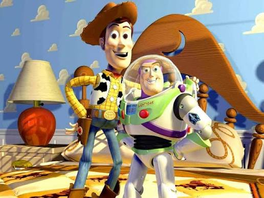

Amizade ao infinito e além 🚀🤠

Relembrando um dos maiores clássicos da animação! Toy Story marca gerações e mostra o verdadeiro significado de parceria.
Tecnologia, rotina, relacionamento e a vida com os dogs 🐾

Relembrando um dos maiores clássicos da animação! Toy Story marca gerações e mostra o verdadeiro significado de parceria.
Trabalhar com telecomunicações aos 17 anos tem sido uma experiência incrível. Todo dia aprendo algo novo sobre redes, conexões e como manter todo mundo online. É uma área dinâmica e cheia de desafios!
Completar dois anos e meio de namoro é um marco muito especial. Construir uma história, crescer junto e ter alguém para compartilhar os dias bons e os desafios da rotina faz toda a diferença.
Não existe recepção melhor depois de um dia longo de trabalho do que a alegria de um cachorro. Seja para brincar ou só ficar de boa, eles sempre deixam o dia mais leve.